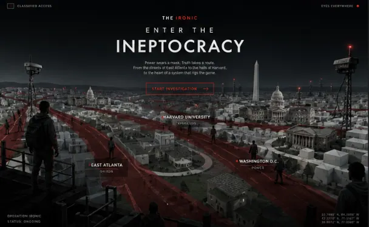
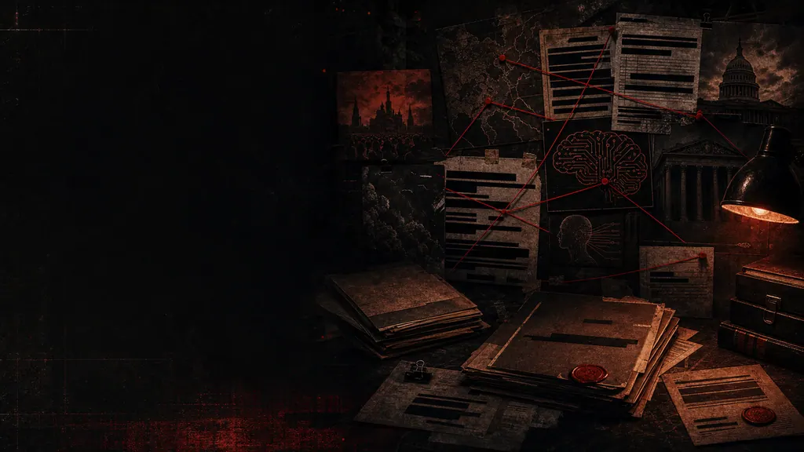
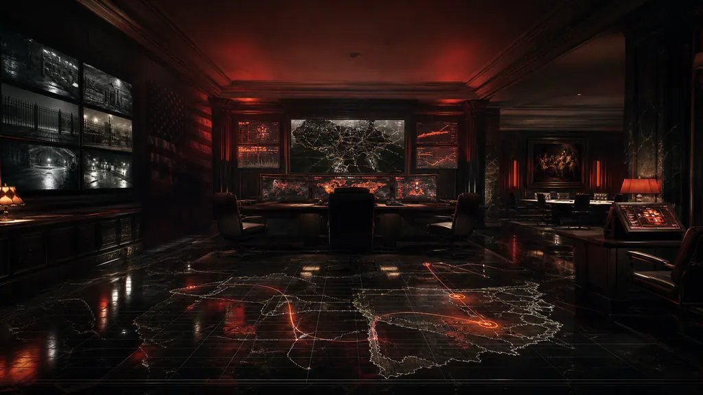

Case 017 · File open
The Ironic Ineptocracy
Smart kid. Bad year. Donor money, draft papers, and a government that did not lose the plot. It authored the plot, notarized the damage, and asked him to acquiesce while the invoice found his name.
The line
Darnell knew the test. America had another one waiting. Case 017 · opening statement
Freedom invoice · status past due
The world of the novel
Every stop makes Darnell pay a little more. The slogans get louder. The screens get cleaner. Obedience starts sounding like civic duty.

Power map
The machine breaks people before anyone names the villain
McNulty wants power with applause. Garnier wants disasters he can bill. The agencies keep their voices calm while Darnell gets routed through rooms he never entered.
-
File // 01
Chain of command
Power moves first. Blame shows up late.
Speeches are the front door. Darnell starts watching the rooms behind them.
-
File // 02
Donor channel
Private government funding, no public disclosure.
“Just get it done, and the money is yours,” Garnier demanded.
-
File // 03
Body count
The number the briefing rooms round down.
“An electric fire occurred from a faulty battery, killing 32 workers.”
Cast files · early access roster
Every character gets a file, not a biography
Nine names are public. Each one opens a file: what the machine sees, what it wants, and what it cannot afford to have known. The rest of the roster stays sealed until the book.
-
Subject · live · file BI 01
Darnell Covington
Seventeen, mathematically adroit, Harvard bound, and suddenly legible to people who confuse promise with property.
-
Subject · drafted · QB · Rosedale, MS
Javon Whitfield
Six foot five, 242 pounds, state title gravity, and a mind nobody gets to reduce to muscle.
-
POTUS · erratic · back in office
Ronald McNulty
Reality television ego with executive power and a talent for making collapse sound procedural.
-
Subject · evading · class war architect
Dijon Garnier
Private capital with a cigar, a mansion, a technological alibi, and a brutal appetite for controllable memory.
-
Subject · unsealed · file D 09 · Langley
Alec Daheim
A disciplined weapon with green eyes, an empty column, and a conscience arriving later than it should.
-
Supporting file · Mamilla file
Avigail
Piercing green eyes, a burner phone, and the rare instinct to help before the paperwork can forbid it.
-
Supporting file · CIA field file
Sabrina
Blue eyes returned from gray, a Midwestern accent under fire, and a gun hand that knows obedience is a choice.
-
Sealed · pending release
The rest of the roster
A much larger machine. The remaining files stay closed until the book opens them.
About the book
A coming-of-age story inside the apparatus that calls its appetite order
Thirty-six chapters of friends, money, pressure, and public lies that keep getting bigger. Darnell can see the life he wants. Javon sees the danger sooner. Alec keeps showing up where the file gets strange. The adults with power keep making every exit smaller.
The title lands like a joke until it starts sounding like a diagnosis. People at the top keep failing upward, and everyone else gets the bill.
- 36Chapters
- 09Public files
- 017Case number
- 119Named dead

Story route
Each stop makes the file heavier
It starts with a school file. Then come the pressure points, the favors, and the people Darnell can barely afford to lose.

Enter the dossier
Get the file before the book
Character files, the investigation map, and the first chapters — sent as the dossier opens. One address, no noise.